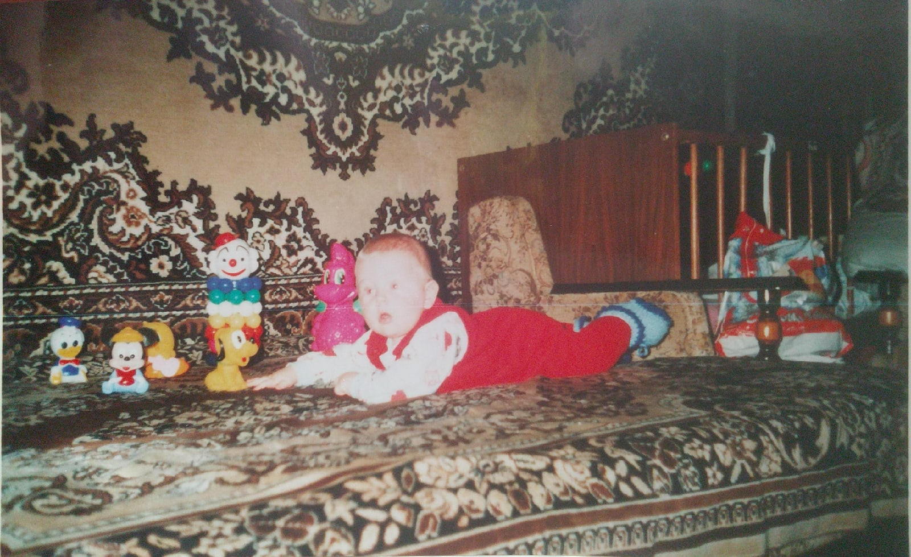

Биография


Приветствую Вас на сайте про меня.
Меня зовут Прокофьев Сергей, мне 19 лет, живу в Московском поселении Вороново, учусь в МИРЭА.
Так с чего же все началось?
Рождение
А началось все 24 июля 2001 года.
Именно тогда, в жаркий летний день в Краснодаре, родился малыш, которого в дальнейшем назовут Сергей.
